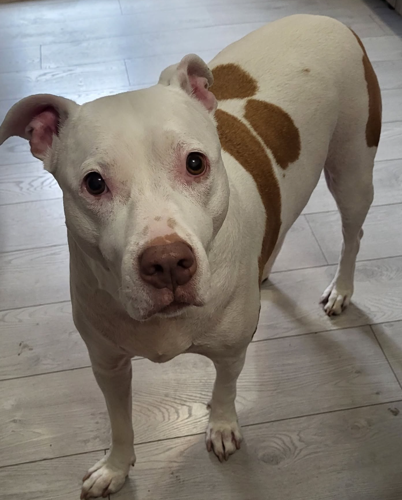
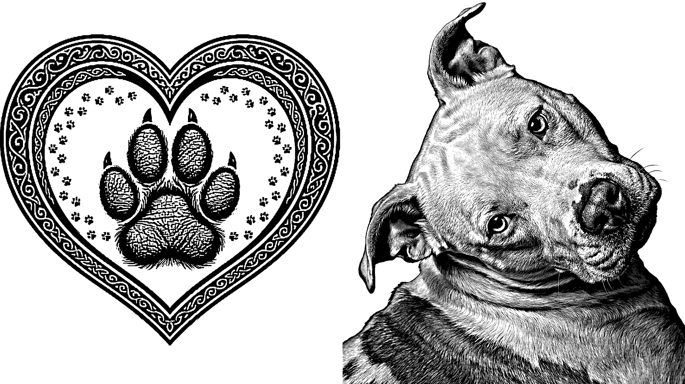
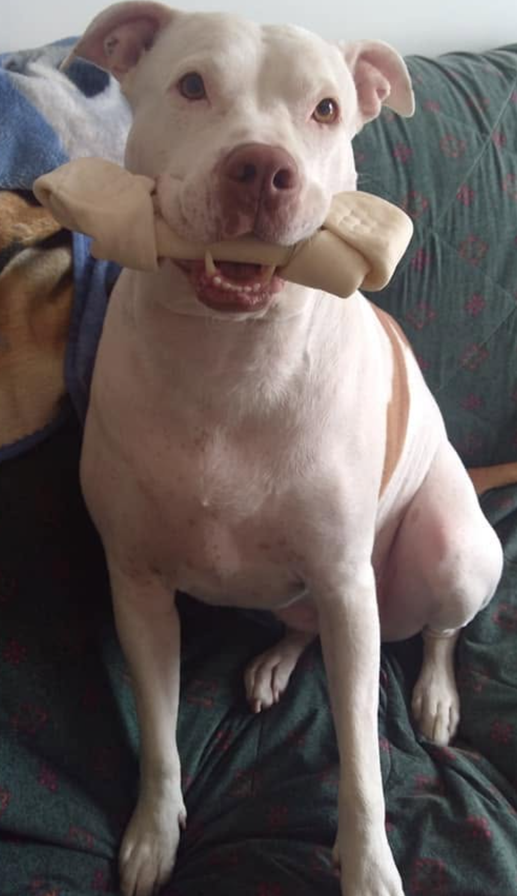
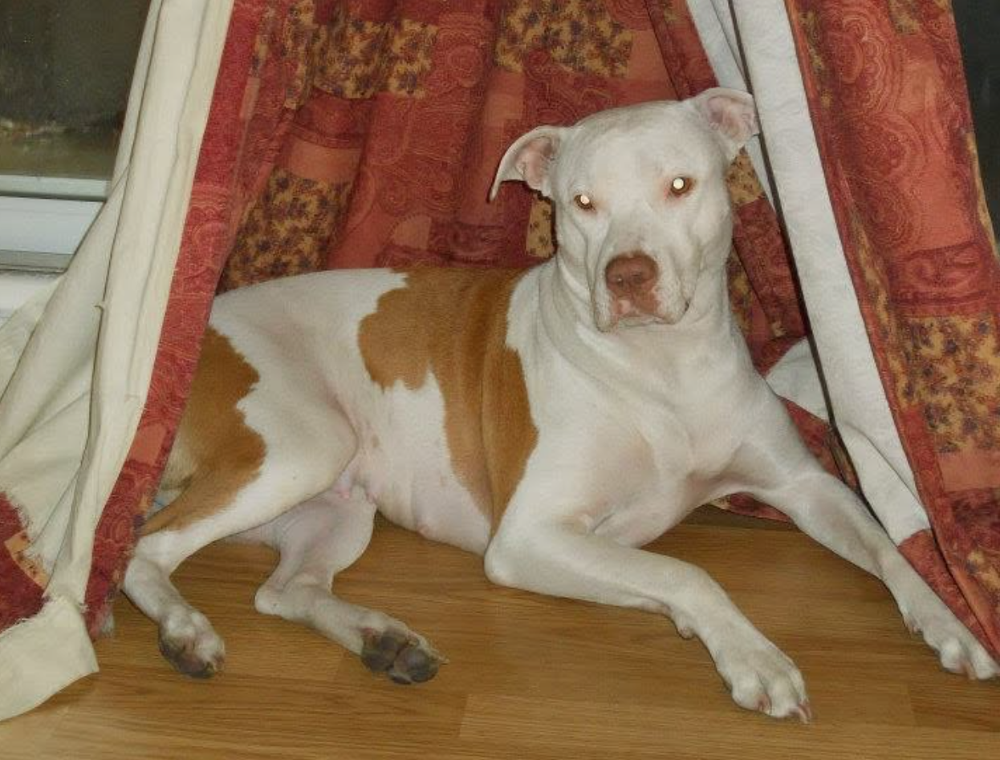
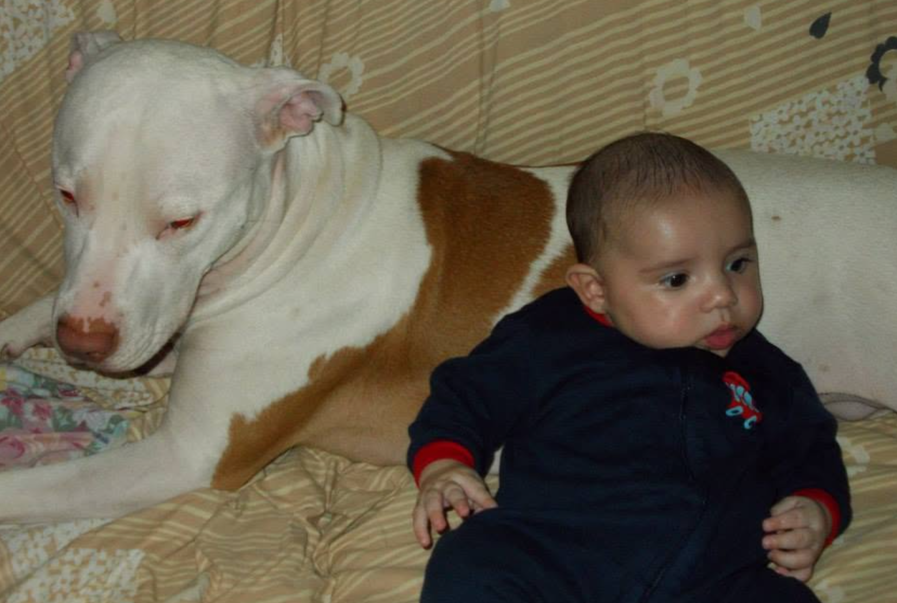

Thunder
« Ma belle et fidèle amie, Le moment est venu de te dire au revoir, et mon cœur est lourd. Prendre cette décision a été l'épreuve la plus difficile de ma vie, mais je l'ai faite par amour, pour t'offrir la paix et t'éviter de souffrir. Tu as refermé tes yeux doucement, en emportant avec toi une partie de mon âme. Merci pour chaque regard complice, chaque accueil joyeux et chaque moment de pur bonheur que tu m'as offert. Tu as été un membre à part entière de la famille, une présence irremplaçable qui a illuminé mes journées. Aujourd'hui, le vide que tu laisses est immense. Mais je choisis de me souvenir de ta joie de vivre, de tes petites habitudes et de tout l'amour que nous avons partagé. Tu ne souffres plus désormais. Va courir librement et reposer en paix. Tu as laissé tes empreintes sur la terre, et tu resteras gravée dans mon cœur pour toujours. Je t'aime et je ne t'oublierai jamais.
En images





